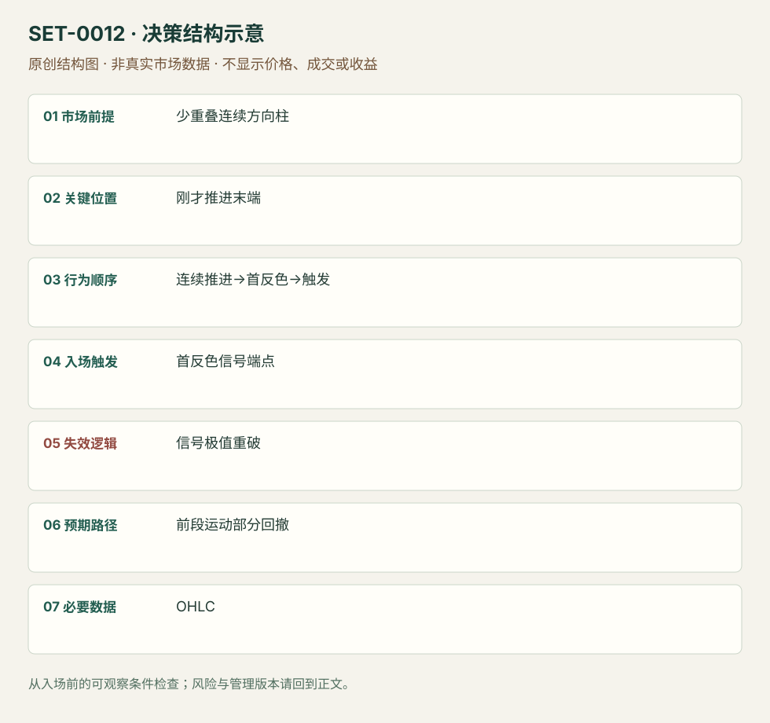

连续推进后的分数回撤反向短交易
Bulkowski Retrace Day Trade · SET-0012 · reviewed · v1.0.0
盈利证据：not_established。审查范围与来源版本见第13节；未知字段保留缺失原因。
1. 名称与快速概览
短周期出现至少三根连续同向、少重叠推进后，首个逆色信号被越过，考虑只捕捉刚才运动的一部分回撤。信号极值破坏即退出，不要求完整趋势反转。
记录口径：PA core；必要数据 OHLC。名称性质：编辑性描述名，英文保留来源术语以便检索。reviewed 只表示本条规则与证据记录审查通过，盈利状态为 not_established。
2. 本质与行为假说
连续推进及首逆色信号可见；“已经耗尽”不是已证事实。本条以部分修正为目的，最早信号允许失败。
3. 适用市场与环境
1或5分钟可见连贯推进、实体明显且少重叠；信号至已知回撤目标有空间。区间密集交替的三根同色不算。
来源实用市场：ES期货1/5分钟、股票1/5分钟（Bulkowski规则）。
Session：美股/ES现金参考段 09:30–16:00 America/New_York；收盘前平仓。期货夜盘单独建背景，不将其并入开盘区间。
跨市场：本版不主张已经验证的跨市场迁移；更换市场必须重定数据来源、流动性与session。
4. 出现前的观察清单
必要：连续推进起点与当时极值明确、至少三根方向柱、首逆色柱完成。增强：前一session参考线。否决：信号风险已大于可见部分回撤空间。
5. 形成过程与状态转换
短期连贯运动→首逆色柱→端点触发→部分回撤→逐柱退出；信号未触发或恢复原向推进则取消。
6. Entry trigger 与执行方式
Bulkowski股票版信号高外一至两美分触发，空头镜像；期货应按tick适配并单独测试，不照搬美分。不能以最终最低点当买价。
7. Invalidation 与止损逻辑
原版保护信号柱低；过大信号柱作者提供缩小周期或实体中点保护两种替代。中点并非完整结构失效，可能更易提前出局，分别记录。
8. Exit、target 与 trade management
先根据已完成推进计算38%/50%修正参照，接近后用1分钟前柱低移动保护。Galen偏向更大反转的管理是另一版本，不继承原版目标结果。
9. 常见 variations
连续柱超过三根和周期变化合并；多空不分条。第二次再入属于SET-0019，原始第一反向交易仍须记录亏损。
10. 失败方式与不交易条件
正常亏损：首反色后新极值。未成立：高重叠小柱不构成强运动。偏离：事后把第二次信号代替失败第一笔。手续费可能侵蚀短目标。
11. 与相近 setups 的区别
12. 图表与案例解读
已查看Galen亏例：ES09-13，1分钟，图头27/7/2013。绿色箭头第一次反向触发后继续破低止损，橙圈之后才出现双底。后来的上涨不能使绿色箭头的亏损消失；其数小时跨图中午夜的时钟时区未披露，不能转成纽约执行时间。
- [VIS-000013] Retrace Day Trading Setup Losing Trade；定位：Losing Trade。第一次绿色反向信号失败，之后另有双底及趋势线突破。 验证：chart_viewed。

本地原创示意（VIS-000069，非真实市场数据）：

小屏阅读可打开原尺寸示意图并缩放。

此图用于对照识别顺序与风险定义；不计入真实案例覆盖率。
视觉材料元数据与查看范围
- VIS-000013 · real_source_chart / structure_and_trigger / chart_viewed
品种：ES 09-13；日期：2013-07-27；周期：1分钟；时区：未知/不适用
时区未在图中核对；来源图表不是成交审计 - VIS-000069 · synthetic_structure_diagram / illustration_only / generated_not_market_evidence
品种：未知/不适用；日期：未知/不适用；周期：未知/不适用；时区：未知/不适用
无真实品种、日期或价格：这是结构示意
13. 证据、分歧与未知项
Bulkowski原规则与Galen自己的期货案例已阅读；Galen是规则转述加实践例，不作为独立盈利复制。以作者明示的规则为主，未阅读付费书。
- [EVD-000019] Galen Woods，《Bulkowski's Retrace Day Trading Setup》，SRC-0053；定位：Trading Rules、Winning/Losing Trade。支持：至少三根同向收盘后首逆色信号，捕捉前段部分回撤，包含亏损例
- [EVD-000020] Thomas Bulkowski，《Bulkowski's Retrace Day Trading Setup (long)》，SRC-0058；定位：Methodology与Checklist。支持：短周期信号高外触发、信号低外保护，接近38%/50%回撤目标改逐柱保护
审查边界：来源份数与独立核心核验分开；当前类别为 limited_derivative_corroboration。正文中的概念、官方事实、衍生解说或同族资料只按其支持范围使用。
14. 可用于复盘的检查表
- ☐ 下单前的前提可核对：少重叠连续方向柱
- ☐ 事前标记位置：刚才推进末端
- ☐ 行为按顺序出现：连续推进→首反色→触发
- ☐ 实际触发符合选定版本：首反色信号端点
- ☐ 事先写明本次否定条件：信号极值重破
- ☐ 目标/路径只用当时已知信息：前段运动部分回撤
- ☐ 数据满足 OHLC；记录时间、点差、滑点、队列和未成交
- ☐ 记录截止平仓及规则偏离；正常亏损不事后改成“未成立”
15. 后续验证问题
固定推进分段、同色定义及可交易目标空间；比较信号柱与中点止损，保留第一失败和后续再入。
双向相关导航
- SET-0007 三推高潮后的反转 楔形需三个分开的摆动推进，本条是连续柱的一次推进。
- SET-0040 单向伸展末端的主动流耗尽反向短打 订单流耗尽要求成交/梯级变化，本条仅观察价格且目标是部分回撤。